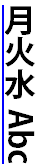
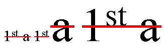
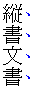

Abstract
This module contains the features of CSS relating to
text decoration, such as underlines, text shadows, and emphasis marks.
CSS is a language for describing
the rendering of structured documents (such as HTML and XML) on screen, on
paper, in speech, etc.
Status of this document
This section describes the status of this document at the time of
its publication. Other documents may supersede this document. A list of
current W3C publications and the latest revision of this technical report
can be found in the W3C technical reports
index at http://www.w3.org/TR/.
Publication as a Working Draft does not imply endorsement by the W3C
Membership. This is a draft document and may be updated, replaced or
obsoleted by other documents at any time. It is inappropriate to cite this
document as other than work in progress.
This CSS module has been produced as a combined effort of the W3C Internationalization Activity,
and the Style Activity and is maintained
by the CSS Working Group. It also
includes contributions made by participants in the XSL Working Group (members
only).
This document was produced by a group operating under the 5 February
2004 W3C Patent Policy. W3C maintains a public list of any patent disclosures made in
connection with the deliverables of the group; that page also includes
instructions for disclosing a patent. An individual who has actual
knowledge of a patent which the individual believes contains Essential
Claim(s) must disclose the information in accordance with section
6 of the W3C Patent Policy.
Feedback on this draft should be posted to the
(archived)
public mailing list www-style@w3.org
(see instructions) with
[text-decor] in the subject line.
You are strongly encouraged to complain if you see something stupid
in this draft. The editors will do their best to respond to all feedback.
The following features are at risk and may be cut from the spec during
its CR period if there are no (correct) implementations:
This is a Last Call Working Draft.
The deadline for comments is 31 January 2013.
Table of Contents
Introduction
This subsection is non-normative.
This module covers text decoration, i.e. decorating the glyphs
of the text once typeset according to font and typographic rules.
(See [[CSS3TEXT]] and [[CSS3-FONTS]].)
Such features are traditionally used not only for purely decorative purposes,
but also in some cases to show emphasis, for honorifics,
and to indicate editorial changes such as insertions, deletions, and misspellings.
CSS Levels 1 and 2 only defined very basic line decorations
(underlines, overlines, and strike-throughs)
appropriate to Western typographical traditions.
Level 3 of this module adds the ability to change
the color, style, position, and continuity of these decorations,
and also introduces
emphasis marks (traditionally used in East Asian typography),
and shadows (which were proposed then deferred from Level 2).
Module Interactions
This module replaces and extends the text-decorating
features defined in [[!CSS21]] chapter 16.
Values
This specification follows the
CSS property
definition conventions from [[!CSS21]]. Value types not defined in
this specification are defined in CSS Level 2 Revision 1 [[!CSS21]].
Other CSS modules may expand the definitions of these value types: for
example [[CSS3COLOR]], when combined with this module, expands the
definition of the <color> value type as used in this specification.
In addition to the property-specific values listed in their definitions,
all properties defined in this specification also accept the
inherit
keyword as their property value. For readability it has not been repeated
explicitly.
Terminology
The terms character,
letter, and
content language
as used in this specification are defined in [[!CSS3TEXT]].
Other terminology and concepts used in this specification are defined
in [[!CSS21]] and [[!CSS3-WRITING-MODES]].
Line Decoration: Underline, Overline, and Strike-Through
The following properties describe line decorations that are added to the content of an element.
When specified on or propagated to an inline box,
that box becomes a decorating box for that decoration,
applying the decoration to all its fragments.
The decoration is then further propagated to any in-flow block-level boxes that split the inline
(see CSS2.1 section 9.2.1.1).
When specified on or propagated to a block container that establishes an inline formatting context,
the decorations are propagated to an anonymous inline box that wraps all the in-flow inline-level children of the block container.
When specified on or propagated to a ruby box,
the decorations are propagated only to the ruby base.
For all other box types,
the decorations are propagated to all in-flow children.
Note that text decorations are not propagated to any out-of-flow descendants,
nor to the contents of atomic inline-level descendants such as inline blocks and inline tables.
They are also not propagated to inline children of inline boxes,
although the decoration is applied to such boxes.
By default underlines, overlines, and line-throughs are applied only to non-replaced inline boxes,
and are drawn over all text (including white space, letter spacing, and word spacing).
Atomic inlines, such as images, are not decorated.
The 'text-decoration-skip' property can be used to modify this behavior,
for example allowing atomic inlines to be underlined
or requiring that white space be skipped.
Margins, borders, and padding of the decorating box are always skipped.
Relatively positioning a descendant moves all text decorations
applied to it along with the descendant's text; it does not affect
calculation of the decoration's initial position on that line.
The 'visibility' property, 'text-shadow', filters, and other graphical transformations
likewise affect text decorations as part of the text they're drawn on,
even if the decorations were specified on an ancestor box.
In the following style sheet and document fragment:
blockquote { text-decoration: underline; color: blue; }
em { display: block; }
cite { color: fuchsia; }
<blockquote>
<p>
<span>
Help, help!
<em> I am under a hat! </em>
<cite> —GwieF </cite>
</span>
</p>
</blockquote>
...the underlining for the blockquote element is propagated to an
anonymous inline box that surrounds the span element, causing
the text "Help, help!" to be blue, with the blue underlining from
the anonymous inline underneath it, the color being taken from the
blockquote element. The <em>text</em>
in the em block is also underlined, as it is in an in-flow block to
which the underline is propagated. The final line of text is fuchsia,
but the underline underneath it is still the blue underline from the
anonymous inline element.

This diagram shows the boxes involved in the example above. The
rounded aqua line represents the anonymous inline element wrapping
the inline contents of the paragraph element, the rounded blue line
represents the span element, and the orange lines represent the
blocks.
Text Decoration Lines: the 'text-decoration-line' property
| Name:
| text-decoration-line
|
| Value:
| none | [ underline || overline || line-through || blink ]
|
| Initial:
| none
|
| Applies to:
| all elements
|
| Inherited:
| no (but see prose)
|
| Percentages:
| N/A
|
| Media:
| visual
|
| Computed value:
| as specified
|
Specifies what line decorations, if any, are added to the element.
Values have the following meanings:
- ''none''
- Neither produces nor inhibits text decoration.
- ''underline''
- Each line of text is underlined.
- ''overline''
- Each line of text has a line over it (i.e. on the opposite
side from an underline).
- ''line-through''
- Each line of text has a line through the middle.
- ''blink''
-
The text blinks (alternates between visible and invisible).
Conforming user agents may simply not blink the text.
Note that not blinking the text is one technique to satisfy checkpoint 3.3 of WAI-UAAG.
This value is deprecated in favor of Animations [[CSS3-ANIMATIONS]].
Text Decoration Color: the 'text-decoration-color' property
| Name:
| text-decoration-color
|
| Value:
| <color>
|
| Initial:
| currentColor
|
| Applies to:
| all elements
|
| Inherited:
| no
|
| Percentages:
| N/A
|
| Media:
| visual
|
| Computed value:
| the computed color
|
This property specifies the color of text decoration (underlines
overlines, and line-throughs) set on the element with
'text-decoration-line'.
The color of text decorations must remain the same on all decorations originating from a given element,
even if descendant boxes have different specified colors.
Text Decoration Style: the 'text-decoration-style' property
| Name:
| text-decoration-style
|
| Value:
| solid | double | dotted | dashed | wavy
|
| Initial:
| solid
|
| Applies to:
| all elements
|
| Inherited:
| no
|
| Percentages:
| N/A
|
| Media:
| visual
|
| Computed value:
| as specified
|
This property specifies the style of the line(s) drawn for
text decoration specified on the element. Values have the
same meaning as for the
border-style
properties [[!CSS3BG]]. ''wavy'' indicates a wavy line.
The style of text decorations must remain the same on all decorations originating from a given element,
even if descendant boxes have different specified styles.
Text Decoration Shorthand: the 'text-decoration' property
This property is a shorthand for setting 'text-decoration-line',
'text-decoration-color', and 'text-decoration-style' in one declaration.
Omitted values are set to their initial values. A 'text-decoration'
declaration that omits both the 'text-decoration-color'
and 'text-decoration-style' values is backwards-compatible
with CSS Levels 1 and 2.
The following example underlines unvisited links with a solid blue
underline in CSS1 and CSS2 UAs and a navy dotted underline in CSS3 UAs.
:link {
color: blue;
text-decoration: underline;
text-decoration: navy dotted underline; /* Ignored in CSS1/CSS2 UAs */
}
Text Decoration Line Continuity: the 'text-decoration-skip' property
| Name:
| text-decoration-skip
|
| Value:
| none | [ objects || spaces || ink || edges || box-decoration ]
|
| Initial:
| objects
|
| Applies to:
| all elements
|
| Inherited:
| yes
|
| Percentages:
| N/A
|
| Media:
| visual
|
| Computed value:
| as specified
|
This property specifies what parts of the element's content
any text decoration affecting the element must skip over. It
controls all text decoration lines drawn by the element
and also any text decoration lines drawn by its ancestors.
Values have the following meanings:
- ''none''
- Skip nothing: text-decoration is drawn for all text content
and for inline replaced elements.
- ''objects''
- Skip this element if it is an atomic inline (such as an
image or inline-block).
- ''spaces''
- Skip white space: this includes regular spaces (U+0020) and
tabs (U+0009), as well as nbsp (U+00A0), ideographic space
(U+3000), all fixed width spaces (such as U+2000–U+200A,
U+202F and U+205F), and any adjacent letter-spacing or
word-spacing.
- ''ink''
- Skip over where glyphs are drawn: interrupt the decoration
line to let text show through where the text decoration would
otherwise cross over a glyph. The UA may also skip a small
distance to either side of the glyph outline.
- ''edges''
- The UA should place the start and end of the line inwards from
the content edge of the decorating element so that, e.g. two
underlined elements side-by-side do not appear to have a single
underline. (This is important in Chinese, where underlining is a
form of punctuation.)
- ''box-decoration''
-
Skip over the box's margin, border, and padding areas.
Note that this only has an effect on decorations imposed by an ancestor.
Note that this property inherits and that descendant
elements can have a different setting.
Note that CSS 2.1 required skipping margins, borders, and padding always.
In this level, by default only the margins, borders, and padding of the decorating element are skipped.
Text Underline Position: the 'text-underline-position' property
| Name:
| text-underline-position
|
| Value:
| auto | alphabetic | [ under || [ left | right ] ]
|
| Initial:
| auto
|
| Applies to:
| all elements
|
| Inherited:
| yes
|
| Percentages:
| N/A
|
| Media:
| visual
|
| Computed value:
| as specified
|
This property sets the position of an underline specified
on the same element: it does not affect underlines specified by
ancestor elements. Values have the following meanings:
- ''auto''
- The user agent may use any algorithm to determine the
underline's position; however it must be placed at or under
the alphabetic baseline.
It is suggested that the underline position
be ''alphabetic'' unless it crosses either subscripted (or
otherwise lowered) text, or it affects characters from Asian
scripts such as Han or Tibetan, for which an alphabetic
underline is too high: in such cases, aligning to the em box
edge as described for ''under left'' is more appropriate.
- ''alphabetic''
- The underline is positioned relative to the alphabetic baseline. In
this case the underline is likely to cross some descenders.
- ''under''
- In horizontal writing modes, the underline is positioned
relative to the under edge of the element's content box.
In this case the underline usually does not cross the descenders.
(This is sometimes called "accounting" underline.)
If the underline affects descendants with a lower content edge,
the user agent should shift the underline down further to the
lowest underlined content box edge.
The user agent may ignore elements with ''vertical-align''
values given as lengths, percentages, ''top'', or ''bottom''
when making this adjustment.
(Note that images that are not affected by the underline per
'text-decoration-skip' will not affect the position of the
underline.)
Because 'text-underline-position' inherits, and is not reset
by the 'text-decoration' shorthand, the following example
switches the document to use ''under'' underlining, which can
be more appropriate for writing systems with long, complicated
descenders. It is also often useful for mathematical or chemical
texts that use many subscripts.
:root { text-underline-position: under; }
- ''left''
- In vertical writing modes, the underline is aligned as for
''under'', except it is always aligned to the left edge of the text.
If this causes the underline to be drawn on the "over" side of
the text, then an overline also switches sides and is drawn on
the "under" side.
- ''right''
- In vertical writing modes, the underline is aligned as for
''under'', except it is always aligned to the right edge of the text.
If this causes the underline to be drawn on the "over" side of
the text, then an overline also switches sides and is drawn on
the "under" side.
If ''under'' is specified alone, ''left'' is also implied.
If ''left'' or ''right'' is specified alone, ''under'' is also
implied.
|

|

|
| ''left''
| ''right''
|
In vertical writing modes, the 'text-underline-position'
values ''left'' and ''right'' allow placing the underline on either
side of the text. (In horizontal writing modes, both values are
treated as ''under''.)
The following example styles modern Chinese, Japanese, and Korean
texts with the appropriate underline positions in both horizontal
and vertical text:
:root:lang(ja), [lang|=ja], :root:lang(ko), [lang|=ko] { text-underline-position: under right; }
:root:lang(zh), [lang|=zh] { text-underline-position: under left; }
Determining the Position and Thickness of Line Decorations
In determining the position of text decoration lines,
user agents must consider, per line box, the "ideal" positions of all fragments
of in-flow inline descendants of the decorating box on that line
as follows
(treating over-positioned underlines as over lines
and under-positioned overlines as under lines):
- over lines
-
Align the line decoration with respect to the highest
over edge
of the considered fragments' EM boxes.
- alphabetic underlines
-
Calculate an average of the ideal underlining offsets
(from their respective alphabetic baselines)
of the considered fragments,
assigning any inline with non-initial 'vertical-align' the ideal offset of its parent.
Align the line decoration to the lowest alphabetic baseline considered,
with that calculated offset.
(Alphabetic baselines can differ between ''baseline''-aligned boxes if the dominant baseline is non-alphabetic.)
- non-alphabetic under lines
-
Position the line decoration with respect to the lowest
under edge
of the considered fragments' EM boxes.
- line-throughs
-
For each set of considered fragments with the same 'font-size',
compute an ideal position averaged from their direct contents and font metrics,
assigning any fragment with non-initial 'vertical-align' the ideal position of its parent.
Position the portion of the line across each decorated fragment at that fragment's ideal position.
(Essentially, this performs the same sort of averaging as for alphabetic underlines,
but recomputes the position when drawing across a descendant with a different computed 'font-size'.
This ensures that the text remains effectively "crossed out" despite any font size changes.)
CSS does not define the thickness of line decorations.
In determining the thickness of text decoration lines,
user agents may consider the font sizes, faces, and weights of descendants
to provide an appropriately averaged thickness.
The following figure shows the averaging for underline:

In the three fragments of underlined text, the underline is drawn
consecutively lower and thicker as the ratio of large text to small
text increases.
Using the same example, a line-through would in the second fragment,
instead of averaging the two font sizes,
split the line-through into two segments:

In both cases, however, the superscript, due to the vertical-alignment shift,
has no effect on the position of the line.
In some cases (such as in OpenType) the font format can offer
information about the appropriate position of an underline.
Typically this information gives the position of an ''alphabetic''
underline; in some cases (especially in CJK fonts), it gives
the position of a ''under left'' underline. (In this case,
the font's underline metrics typically touch the bottom edge
of the em box).
The UA is encouraged to use information (such as the underline
thickness, or appropriate alphabetic alignment) from the font
wherever appropriate.
Emphasis Marks
East Asian documents traditionally use small symbols next to each glyph to emphasize
a run of text. For example:
Emphasis Mark Style: the 'text-emphasis-style' property
| Name:
| text-emphasis-style
|
| Value:
| none |
[ [ filled | open ] || [ dot | circle | double-circle | triangle | sesame ] ] |
<string>
|
| Initial:
| none
|
| Applies to:
| all elements
|
| Inherited:
| yes
|
| Percentages:
| N/A
|
| Media:
| visual
|
| Computed value:
| 'none', a pair of keywords representing the shape and fill, or
a string
|
This property applies emphasis marks to the element's text.
Values have the following meanings:
- ''none''
- No emphasis marks.
- ''filled''
- The shape is filled with solid color.
- ''open''
- The shape is hollow.
- ''dot''
- Display small circles as marks.
The filled dot is U+2022 '•', and the open dot is U+25E6 '◦'.
- ''circle''
- Display large circles as marks.
The filled circle is U+25CF '●', and the open circle is U+25CB '○'.
- ''double-circle''
- Display double circles as marks.
The filled double-circle is U+25C9 '◉', and the open double-circle is U+25CE '◎'.
- ''triangle''
- Display triangles as marks.
The filled triangle is U+25B2 '▲', and the open triangle is U+25B3 '△'.
- ''sesame''
- Display sesames as marks.
The filled sesame is U+FE45 '﹅', and the open sesame is U+FE46 '﹆'.
- ''<string>''
- Display the given string as marks.
Authors should not specify more than one character in <string>.
The UA may truncate or ignore strings consisting of more than one grapheme cluster.
If a shape keyword is specified but neither of ''filled'' nor ''open'' is
specified, ''filled'' is assumed. If only ''filled'' or ''open'' is specified,
the shape keyword computes to ''circle'' in horizontal writing mode and
''sesame'' in vertical writing mode.
The marks should be drawn using the element's font settings with its
size scaled down to 50%. However, not all fonts have all these glyphs,
and some fonts use inappropriate sizes for emphasis marks in these
code points. The UA may opt to use a font known to be good for
emphasis marks, or the marks may instead be synthesized by the UA.
Marks must remain upright in vertical writing modes: like CJK
characters, they do not rotate to match the writing mode.
One example of good fonts for emphasis marks is Adobe's opensource project,
Kenten Generic OpenType Font,
which is specially designed for the emphasis marks.
The marks are drawn once for each character. However,
emphasis marks are not drawn for characters that are:
- Word separators or that
belong to the Unicode separator classes (Z*).
(But note that emphasis marks are drawn for a space
that combines with any combining characters.)
- Characters belonging to the Unicode classes for control codes
and unassigned characters (Cc, Cf, Cn).
If emphasis marks are drawn for characters
for which ruby is drawn in the same position as the emphasis mark,
the ruby should be stacked between the emphasis marks and the base text.
In this case, the position of the emphasis marks for a given element
should be determined as if all characters have ruby boxes
of the same height as the highest ruby box in the element.
If the UA is not capable of drawing ruby and emphasis marks on the same side,
the UA may hide ruby and draw only emphasis marks.
A future level of CSS may define controls to specify
what to do when emphasis marks and ruby text coincide.
Emphasis Mark Color: the 'text-emphasis-color' property
| Name:
| text-emphasis-color
|
| Value:
| <color>
|
| Initial:
| currentColor
|
| Applies to:
| all elements
|
| Inherited:
| yes
|
| Percentages:
| N/A
|
| Media:
| visual
|
| Computed value:
| as specified
|
This property specifies the foreground color of the emphasis marks.
The ''currentcolor'' keyword computes to itself
and is resolved to the value of 'color' after inheritance is performed.
This means 'text-emphasis-color' by default matches the text 'color'
even as 'color' changes across elements.
Emphasis Mark Shorthand: the 'text-emphasis' property
| Name:
| text-emphasis
|
| Value:
| '<text-emphasis-style>' || '<text-emphasis-color>'
|
| Initial:
| see individual properties
|
| Applies to:
| all elements
|
| Inherited:
| yes
|
| Percentages:
| N/A
|
| Media:
| visual
|
| Computed value:
| see individual properties
|
This property is a shorthand for setting
'text-emphasis-style' and 'text-emphasis-color'
in one declaration.
Omitted values are set to their initial values.
Note that 'text-emphasis-position' is not reset in this
shorthand. This is because typically the shape and color vary, but the
position is consistent for a particular language throughout the document.
Therefore the position should inherit independently.
Emphasis Mark Position: the 'text-emphasis-position' property
| Name:
| text-emphasis-position
|
| Value:
| [ over | under ] && [ right | left ]
|
| Initial:
| over right
|
| Applies to:
| all elements
|
| Inherited:
| yes
|
| Percentages:
| N/A
|
| Media:
| visual
|
| Computed value:
| as specified
|
This property describes where emphasis marks are drawn at.
The values have following meanings:
- ''over''
- Draw marks over the text in horizontal writing mode.
- ''under''
- Draw marks under the text in horizontal writing mode.
- ''right''
- Draw marks to the right of the text in vertical writing mode.
- ''left''
- Draw marks to the left of the text in vertical writing mode.
Emphasis marks are drawn exactly as if each character was
assigned the mark as its ruby annotation text with the ruby position
given by 'text-emphasis-position' and the ruby alignment as centered.
The effect of emphasis marks on the line height is the same as for
ruby text.
Note, the preferred position of emphasis marks depends on the
language. In Japanese for example, the preferred position is
''over right''. In Chinese, on the other hand, the preferred
position is ''under right''.
The informative table below summarizes the preferred
emphasis mark positions for Chinese and Japanese:
Preferred emphasis mark and ruby position
| Language
| Preferred mark position
| Illustration
|
| Horizontal
| Vertical
|
| Japanese
| over
| right
|
 applied above a fragment of Japanese text")
|

|
| Chinese
| under
| right
|
 applied below a fragment of Chinese text")
|
Text Shadows: the 'text-shadow' property
| Name:
| text-shadow
|
| Value:
| none | [ <length>{2,3} && <color>? ]#
|
| Initial:
| none
|
| Applies to:
| all elements
|
| Inherited:
| yes
|
| Percentages:
| N/A
|
| Media:
| visual
|
| Computed value:
| a color plus three absolute <length>s
|
This property accepts a comma-separated list of shadow effects to
be applied to the text of the element. Values are interpreted as for
'box-shadow'
[[!CSS3BG]]. (But note that spread values are not allowed.)
The shadow is applied to all of the element's text as well as any
text decorations it specifies.
The shadow effects are applied front-to-back: the first shadow is on
top. The shadows may thus overlay each other, but they never overlay
the text itself. The shadow must be painted at a stack level between
the element's border and/or background, if present, and the elements
text and text decoration. UAs should avoid painting text shadows over
text in adjacent elements belonging to the same stack level and stacking
context. (This may mean that the exact stack level of the shadows depends
on whether the element has a border or background: the exact stacking
behavior of text shadows is thus UA-defined.)
Unlike 'box-shadow', text shadows are not clipped to the shadowed
shape and may show through if the text is partially-transparent.
Like 'box-shadow', text shadows do not influence layout, and do not
trigger scrolling or increase the size of the scrollable area.
The painting order of shadows defined here is the opposite
of that defined in the 1998
CSS2 Recommendation.
The ''text-shadow'' property applies to both the
::first-line and ::first-letter
pseudo-elements.
Document Conventions
Conformance requirements are expressed with a combination of
descriptive assertions and RFC 2119 terminology. The key words “MUST”,
“MUST NOT”, “REQUIRED”, “SHALL”, “SHALL NOT”, “SHOULD”, “SHOULD NOT”,
“RECOMMENDED”, “MAY”, and “OPTIONAL” in the normative parts of this
document are to be interpreted as described in RFC 2119.
However, for readability, these words do not appear in all uppercase
letters in this specification.
All of the text of this specification is normative except sections
explicitly marked as non-normative, examples, and notes. [[!RFC2119]]
Examples in this specification are introduced with the words “for example”
or are set apart from the normative text with class="example",
like this:
This is an example of an informative example.
Informative notes begin with the word “Note” and are set apart from the
normative text with class="note", like this:
Note, this is an informative note.
Conformance to CSS Text Level 3
is defined for three conformance classes:
- style sheet
- A CSS
style sheet.
- renderer
- A UA
that interprets the semantics of a style sheet and renders
documents that use them.
- authoring tool
- A UA
that writes a style sheet.
A style sheet is conformant to CSS Text Level 3
if all of its declarations that use properties defined in this module
have values that are valid according to the generic CSS grammar and the
individual grammars of each property as given in this module.
A renderer is conformant to CSS Text Level 3
if, in addition to interpreting the style sheet as defined by the
appropriate specifications, it supports all the features defined
by CSS Text Level 3 by parsing them correctly
and rendering the document accordingly. However, the inability of a
UA to correctly render a document due to limitations of the device
does not make the UA non-conformant. (For example, a UA is not
required to render color on a monochrome monitor.)
An authoring tool is conformant to CSS Text Level 3
if it writes style sheets that are syntactically correct according to the
generic CSS grammar and the individual grammars of each feature in
this module, and meet all other conformance requirements of style sheets
as described in this module.
Partial Implementations
So that authors can exploit the forward-compatible parsing rules to
assign fallback values, CSS renderers must
treat as invalid (and ignore
as appropriate) any at-rules, properties, property values, keywords,
and other syntactic constructs for which they have no usable level of
support. In particular, user agents must not selectively
ignore unsupported component values and honor supported values in a single
multi-value property declaration: if any value is considered invalid
(as unsupported values must be), CSS requires that the entire declaration
be ignored.
Experimental Implementations
To avoid clashes with future CSS features, the CSS2.1 specification
reserves a prefixed
syntax for proprietary and experimental extensions to CSS.
Prior to a specification reaching the Candidate Recommendation stage
in the W3C process, all implementations of a CSS feature are considered
experimental. The CSS Working Group recommends that implementations
use a vendor-prefixed syntax for such features, including those in
W3C Working Drafts. This avoids incompatibilities with future changes
in the draft.
Non-Experimental Implementations
Once a specification reaches the Candidate Recommendation stage,
non-experimental implementations are possible, and implementors should
release an unprefixed implementation of any CR-level feature they
can demonstrate to be correctly implemented according to spec.
To establish and maintain the interoperability of CSS across
implementations, the CSS Working Group requests that non-experimental
CSS renderers submit an implementation report (and, if necessary, the
testcases used for that implementation report) to the W3C before
releasing an unprefixed implementation of any CSS features. Testcases
submitted to W3C are subject to review and correction by the CSS
Working Group.
Further information on submitting testcases and implementation reports
can be found from on the CSS Working Group's website at
http://www.w3.org/Style/CSS/Test/.
Questions should be directed to the
public-css-testsuite@w3.org
mailing list.
CR Exit Criteria
For this specification to be advanced to Proposed Recommendation,
there must be at least two independent, interoperable implementations
of each feature. Each feature may be implemented by a different set of
products, there is no requirement that all features be implemented by
a single product. For the purposes of this criterion, we define the
following terms:
- independent
- each implementation must be developed by a
different party and cannot share, reuse, or derive from code
used by another qualifying implementation. Sections of code that
have no bearing on the implementation of this specification are
exempt from this requirement.
- interoperable
- passing the respective test case(s) in the
official CSS test suite, or, if the implementation is not a Web
browser, an equivalent test. Every relevant test in the test
suite should have an equivalent test created if such a user
agent (UA) is to be used to claim interoperability. In addition
if such a UA is to be used to claim interoperability, then there
must one or more additional UAs which can also pass those
equivalent tests in the same way for the purpose of
interoperability. The equivalent tests must be made publicly
available for the purposes of peer review.
- implementation
- a user agent which:
- implements the specification.
- is available to the general public. The implementation may
be a shipping product or other publicly available version
(i.e., beta version, preview release, or “nightly build”).
Non-shipping product releases must have implemented the
feature(s) for a period of at least one month in order to
demonstrate stability.
- is not experimental (i.e., a version specifically designed
to pass the test suite and is not intended for normal usage
going forward).
The specification will remain Candidate Recommendation for at least
six months.
Appendix A: Acknowledgements
This specification would not have been possible without the help from:
Ayman Aldahleh, Bert Bos, Tantek Çelik, Stephen Deach, John Daggett,
Martin Dürst,
Laurie Anna Edlund, Ben Errez, Yaniv Feinberg, Arye Gittelman, Ian
Hickson, Martin Heijdra, Richard Ishida, Masayasu Ishikawa,
Michael Jochimsen, Eric LeVine, Ambrose Li, Håkon Wium Lie, Chris Lilley,
Ken Lunde, Nat McCully, Shinyu Murakami, Paul Nelson, Chris Pratley, Marcin Sawicki,
Arnold Schrijver, Rahul Sonnad, Michel Suignard, Takao Suzuki,
Frank Tang, Chris Thrasher, Etan Wexler, Chris Wilson, Masafumi Yabe
and Steve Zilles.
Appendix B: References
Normative references
Appendix C:
Changes
Significant changes include:
- Changed line decorations to not skip margins/padding/borders of descendents' inline boxes.
- Clarified and corrected the definitions for line decoration propagation
- Changed the definitions for averaging line decoration positions
to better accommodate changes in font size.
- Changed ''above'' and ''below'' values of 'text-emphasis-position' and 'text-underline-position'
to ''over'' and ''under'' to match terminology in 'text-decoration-line'.
- Define interaction of 'text-shadow' and 'text-decoration'.
Appendix D: Default UA Stylesheet
This appendix is informative,
and is to help UA developers to implement default stylesheet,
but UA developers are free to ignore or change.
s, strike, del {
text-decoration: line-through;
}
u, ins, :link, :visited {
text-decoration: underline;
}
abbr[title], acronym[title] {
text-decoration: dotted underline;
}
/* disable inheritance of text-emphasis marks to ruby text:
emphasis marks should only apply to base text */
rt { text-emphasis: none; }
:root:lang(zh), [lang|=zh] {
/* default emphasis mark position is 'under right' for Chinese */
text-emphasis-position: under right;
}
:root:lang(ja), [lang|=ja], :root:lang(ko), [lang|=ko] {
/* default underline position is 'under right' for Japanese and Korean */
text-underline-position: under right;
}
:root:lang(zh), [lang|=zh] {
/* default underline position is 'under left' for Chinese */
text-underline-position: under left;
}
blink {
text-decoration-line: blink;
}
If you find any issues, recommendations to add, or corrections,
please send the information to www-style@w3.org
with [[SHORTNAME]] in the subject line.
While ''text-decoration-line: blink'' can't be fully reproduced with other existing properties,
authors can achieve a very similar effect with the following CSS:
@keyframes blink {
0% {
visibility: hidden;
animation-timing-function: step-end;
}
25%, 100% {
visibility: visible;
}
}
blink {
animation: blink 1s infinite;
}